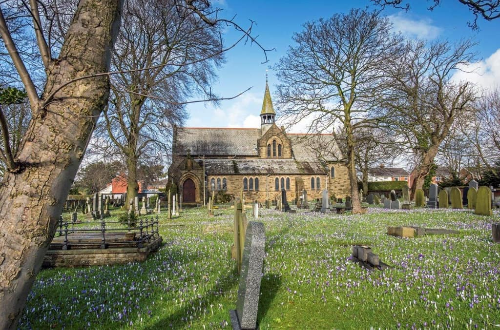

2 March 2022
St Paul's Churchyard in Bloom
Pictures of St Paul's churchyard with the crocus on full display

Serving Christ - Serving the Community
The parish of Warton: St Paul is committed to the safeguarding of children, young people and adults. We follow the House of Bishops guidance and policies and have our own Parish Safeguarding Officer(s), PSOs. The Diocese of Blackburn’s safeguarding pages contain vital links and information including…
Read the full noticeWeekly news sheets are now available to view from https://www.achurchnearyou.com/church/19565/page/40990/view/
Read the full noticeCopies of the latest editions of the St Paul's Parish Magazine are available to download or view at https://www.achurchnearyou.com/church/19565/page/55052/view/. A link is also available from the Forms page.
Read the full noticeThank you to everyone for raising donations for St Pauls Church Warton Preston with #easyfundraising! If you haven't signed up yet, it's easy and completely FREE. 6,100 shops and sites will donate to us when you use easyfundraising to do your everyday online shopping - at no extra cost to you! Every…
Read the full noticeOnline donations can now be made via our GiveALittle account. Go to https://givealittle.co/campaigns/d9a38846-f38b-4a5c-a7ee-0402cf7eeb46 or follow the link on the Links page.
Read the full notice2 March 2022
Pictures of St Paul's churchyard with the crocus on full display
16 August 2020
Our graveyard has now been recognised by the Commonwealth War Graves Commission